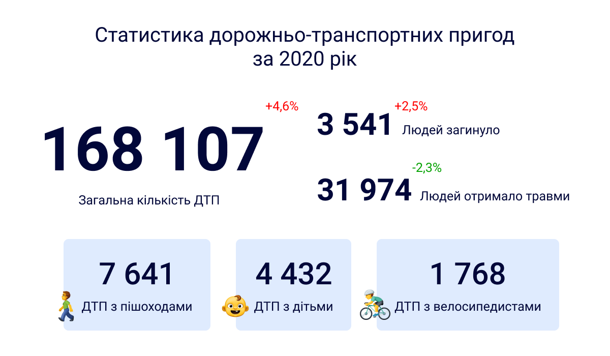

По данным Национальной Полиции, на дорогах Украины в 2020 году произошло 168 тыс. ДТП, что на 4,6% больше, чем в предыдущем, 2019 года. Количество ДТП с пострадавшими осталась почти неизменной: 26,1 тыс. человек, было травмировано 32 тыс. человек, погибло - более 3,5 тыс. Пятница и суббота — дни, когда зарегистрировано наибольшее количество аварий с пострадавшими (это 31% от всех ДТП с погибшими и травмированными). Пик аварийности, в том числе и аварий с погибшими и травмированными, приходится на 17:00.
Самые распространенные причины ДТП в Украине:
- превышение безопасной скорости движения – 34% ДТП
- нарушение правил маневрирования – 22%
- нарушение правил проезда перекрестков – 8,5%
- несоблюдение безопасной дистанции – 7,5%
- нарушение проезда на пешеходном переходе – 6%
- пьяное вождение – 5%
Кроме того, названы основные виды ДТП:
- столкновение
- наезд на транспортное средство, которое стоит
- наезд на препятствие
- наезд на пешехода
- съезд с проезжей части с опрокидыванием транспортного средства.
ДТП в Украине и основные причины аварий с травмированными в 2020 году
Напомним, что в 2019 году на дорогах Украины произошло 160 675 дорожно-транспортных происшествий. 26 052 из этих ДТП — с пострадавшими, из них погибли 3 454 человека и 32 736 получили травмы. | Фориншурер